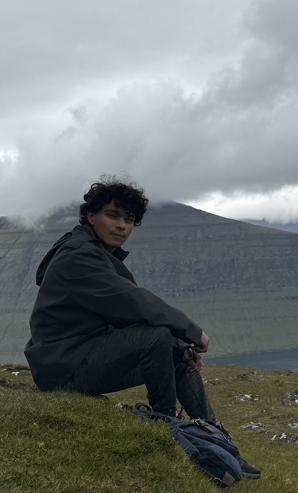

hey.
?
Your approximate location is geocoded via IP address, if you are using a VPN or special network this may be dead wrong

Oyon Ganguli
RPI Information Technology
and Web Sciences '29
RPI DINING
Elevator Pitch